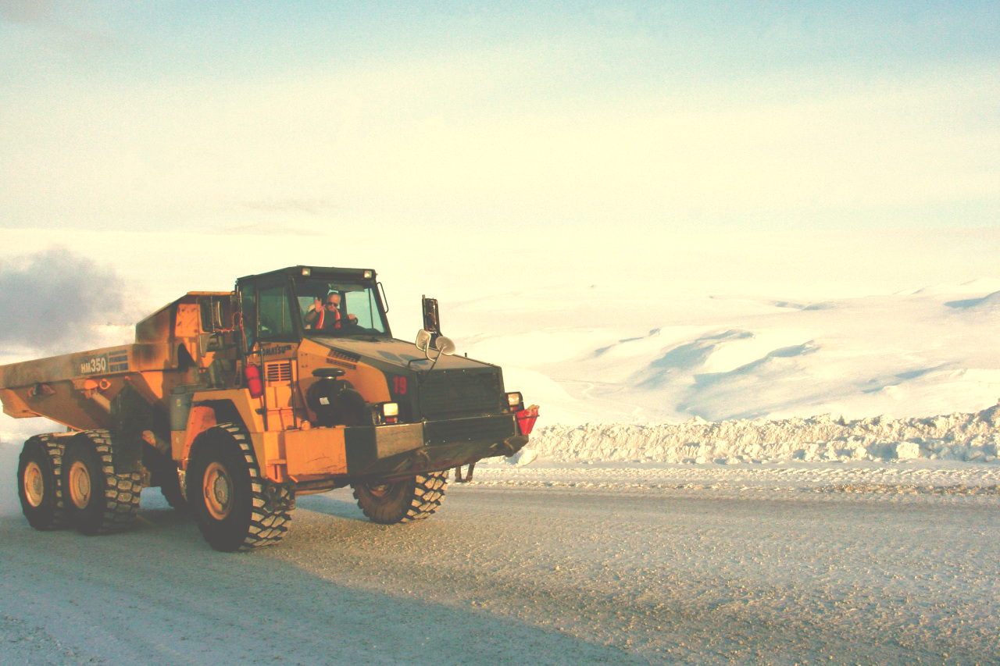

My Work

Doctoral Thesis
×
Doctoral Thesis
Numerical and experimental evaluation of the stability of rock masses in thawing permafrost ground conditions
- Independently established NSERC-industrial sponsorship of $70,000+ to collaborate with Kinross Gold Corp. on a doctoral thesis research project.
- Developed a novel methodology for preparing and testing ice-rock core specimens to characterise the strength of ice-filled fractures in rock
- Travelled to Siberia, Russia to implement a 4-year data collection campaign in underground mine to investigate the stability of underground excavations in thawing permafrost ground.
- Developed a multi-physical numerical modelling approach for assessing the heat transfer and melting process of ice-filled fractures and used analytical programming as well as statistical regression modelling using MATLAB, Python and R software packages.
- Communicated and published research at 8 international conferences to multidisciplinary audiences by presenting distilled knowledge, generating interest from delegates of various industries (e.g. oil/gas, geotechnical, mining, ground-freezing).
- Relevant courses: Financial Management for Engineers (2018); Statistical Models in Empirical Research (2015), Int’l Business for Engineers (2015)
- University of Toronto Doctoral Completion Award ($8,500)
2014 - Present
Assessing Company Valuations
×
Assessing Company Valuations
Comparison of two mining company's valuations
- 1
- 2
- 3